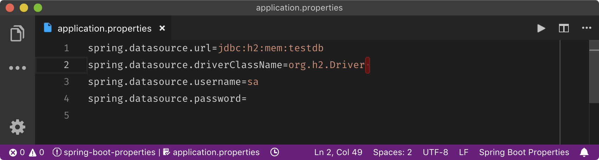

TL;DR:Spring Boot does not trim off the trailing whitespaces in
*.propertiesthat in turn might lead to some unexpected errors. As the Spring development team decides to not fix this issue, we can configure code editors to avoid some similar problems.
The fun …
Coming back working with Spring after few years, I was thrilled trying out Spring Boot 2 with its superb cool auto-configurations and many more. It’s a lot much more fun to work with than Spring 3 used in some of my previous projects.
, the problem …
When tinkering with Spring Boot, I found a half-funny half-annoying issue that made one of my Spring apps failed to launch. As the project is rather clumpy and full of experimenting code, here I will replicate this issue in a smaller and simpler scale.
Let’s create a small Spring Boot project with JPA and H2. We can either use Spring Initialzr, Spring Boot CLI, or IDE such as IntelliJ IDEA, Eclipse or NetBeans. To keep it simple, I use Spring Boot CLI that can be easily installed.
$ spring version
Spring CLI v2.1.0.RELEASE
$ spring init --dependencies=data-jpa,h2 spring-boot-trailing-spaces
Using service at https://start.spring.io
Project extracted to '/dev/spring-framework/spring-boot-trailing-spaces'
The newly created Spring application can be launched with Maven.
$ cd spring-boot-trailing-spaces
$ mvn spring-boot:run
...
There should be no problem as we have not made any changes. Now, open “src/main/resources/application.properties” with an editor, then copy and paste the following code. Promise me that you don’t change the pasted code ;)
spring.datasource.url=jdbc:h2:mem:testdb
spring.datasource.driverClassName=org.h2.Driver
spring.datasource.username=sa
spring.datasource.password=
These lines are typical data source configuration of an embedded H2 database engine that you might have seen around or used many times. Unfortunately, this time they will crash the Spring application.
$ mvn spring-boot:run
...
2018-11-27 21:20:54.289 ERROR 92868 --- [ main] o.s.boot.SpringApplication : Application run failed
org.springframework.beans.factory.UnsatisfiedDependencyException: Error creating bean with name 'org.springframework.boot.autoconfigure.orm.jpa.HibernateJpaConfiguration': Unsatisfied dependency expressed through constructor parameter 0; nested exception is org.springframework.beans.factory.BeanCreationException: Error creating bean with name 'dataSource' defined in class path resource [org/springframework/boot/autoconfigure/jdbc/DataSourceConfiguration$Hikari.class]: Bean instantiation via factory method failed; nested exception is org.springframework.beans.BeanInstantiationException: Failed to instantiate [com.zaxxer.hikari.HikariDataSource]: Factory method 'dataSource' threw exception; nested exception is java.lang.IllegalStateException: Cannot load driver class: org.h2.Driver
Walking across the lengthy exception stack and error messages, the main culprit seems to be “Cannot load driver class: org.h2.Driver”.
Why is that?
, the root causes? …
The very first thing came to my mind is to check whether H2 jar is included properly in the classpath.
$ mvn dependency:tree
...
[INFO] +- com.h2database:h2:jar:1.4.197:runtime
...
Yup, it’s there!
You can try further on, like I did, to remove $HOME/.m2 and re-run Maven or even restart the machine (but the app still doesn’t work!!!).
I have searched around for this specific issue and found some similar or the same exception, for instance, here, here, here or here. None of the solutions there can fix it.
It took me nearly half an hour to figure out the root cause. That is the single trailing space at the end of org.h2.Driver. Here I intentionally added in order to replicate exactly the original problem in my experimenting project. And the fault was mine who just lazily copied and pasted these few lines of Spring Boot configurations. After I removed all trailing spaces, the error disappeared.
Voilà!
… and the solutions?!
No copy & paste please, you might say ;)
I would blame the Pivotal development team (just kidding ;) as they should have handled such a trivial issue better because trailing whitespaces, by default in most editors, are not always visible nor printable. Indeed, trailing whitespaces in Spring properties has driven many developers crazy here, here, here, here or here. Note that it’s for now official that the Spring Boot team won’t fix this because they cannot safely trim properties. So, it’s our responsibilities to take care of these whitespaces.
Sidenote:
Whitespaces can also become worst enemies to source code controls (but not all whitespaces are born equal, for instance, two continuous trailing spaces in some flavours of Markdown should be persisted as they are translated into HTML line-breaks<br>).
Fortunately, most of code editors somehow can help to remedy the aforementioned issue either with built-in features or extensions. There are two possible non-exclusive methods (which can be combined of course)
-
M1. Showing or highlighting whitespaces
-
M2. (Automatically) trimming off whitespaces
For the first method, we configure the editors to force hard-to-see non-printable characters like tabs and spaces become visible. For instance, the problematic example above is shown in Visual Studio Code with the extension Trailing Spaces helps to highlight the trailing whitespaces in red. This way might be a bit UI-intrusive as highlighted whitespaces everywhere can distract many of us. I personally don’t really like having the whitespaces and tabs messing up with my code structure.

The second method can be automatic or manual in which the editors (maybe with support from extensions) can remove the whitespaces during saving or via some editing commands. However, beware the issues with Markdown trailing whitespaces, we should use this option per language specific settings if possible.
We will examine few popular code editors (please add more of yours in the comment) regarding these two methods.
-
-
Either or
config.cson"*": editor: ... showInvisibles: true
-
-
- (M1) From version 3.7+: : Turn on “Show whitespace characters” and fine-tune the option via “configure visibility”
- (M2) It’s rather tedious in Eclipse as many people have already complained. It’s perhaps due to the nature of Eclipse as a platform for several editors and plugins working together. IMHO, Eclipse should offer a common option to remove trailing whitespaces for all editors in the same level and place as “Show whitespace characters” above. Each kind of editor then might offer specific and optimal ways for certain file types. Unfortunately, for now we have to configure for each file type editor or formatter. For instance, Java editor , check “Additional actions”, choose “Configure”. Next, in the “Code Organizing” tab check “Remove trailing whitespace”. Unfortunately, properties file in our example does not provide such options in Eclipse.
- (M2) You may want to use the plugin AnyEdit Tools to clean up trailing whitespaces for all file types:
- (M2) A universal approach, also a little more difficult, is to use “Search & Replace” to search with regular expressions for all of
"[\t ]+$"(i.e. more than one whitespaces and/or tabs, please note the whitespace between\tand]) and replace them with""(blank/empty).
-
- (M1) or
- (M2) Since 2017.2 and later, there is an option
with “
All”, “Modified Lines” or “None” but the IDE does not quite behave, i.e. I chose “All” but the trailing spaces are still there after saving. It’s rather lame and embarrassing for such a highly praised and expensive IDEs.
-
- (M1)
:
"draw_white_space": "all"(show all whitespaces) or"draw_white_space": "selection"(only show within the selection)
- (M2)
:
"trim_trailing_white_space_on_save": false - (M2) Use the plug-in Trimmer for manually cleaning up whitespaces
- (M1)
:
-
- (M1) Either
or
settings.json▸"editor.renderWhitespace": "boundary"(to render whitespaces everywhere except single space between words) or"editor.renderWhitespace": "all"(to render all whitespaces) - (M2) Either
or
settings.json▸"files.trimTrailingWhitespace": true - (M1+2) I use the extension Trailing Spaces that even goes further with red colour highlighting of whitespaces and provides extra commands for (manually) trimming whitespaces.
- (M1) Either
or
-
- You can follow the tips on highlighting unwanted spaces and removing unwanted spaces, some other advanced tips on Vi and Vim SE, or using a plug-in that can highlight trailing whitespaces and provide commands to strip all of them
- (M1+2) vim-trailing-whitespace highlighting and trimming with
:FixWhitespace - (M1+2) ntpeters/vim-better-whitespace highlighting and trimming with
:StripWhitespace - (M1) ShowTrailingWhitespace: mostly trimming whitespaces
- (M2) DeleteTrailingWhitespace: removing trailing whitespaces with
:DeleteTrailingWhitespaceor automatically when the buffer is saved
- (M1+2) vim-trailing-whitespace highlighting and trimming with
- You can follow the tips on highlighting unwanted spaces and removing unwanted spaces, some other advanced tips on Vi and Vim SE, or using a plug-in that can highlight trailing whitespaces and provide commands to strip all of them
For the sake of completeness, there are some editor-independent solutions too.
-
sed—a stream editor (credits to Tim Pote’s excellent SO answer)
- For POSIX
find . -type f -name '*.properties' \ -exec sed --in-place 's/[[:space:]]\+$//' {} \+- For macOS/BSD
find . -iname '*.properties' -type f \ -exec sed -i '' 's/[[:space:]]\{1,\}$//' {} \+
Wow, quite a long post for such a trivial issue, eh?! Thanks for reading to the end and I hope that my wasted time and effort here would save some of yours in future.
Cheers!